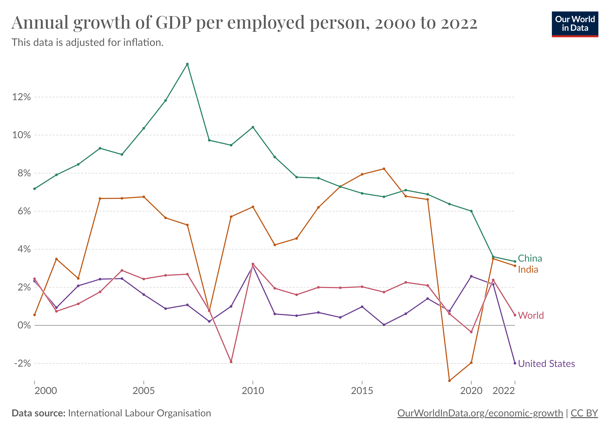

Economic Empowerment Hub
Employement Situation in country
The authentic data source of employment/unemployment indicators in India at present is the Periodic Labour Force Survey (PLFS) conducted by the Ministry of Statistics and Programme Implementation since 2017-18. The annual PLFS reports for the year 2017-18, 2018-19 and 2019-20 are available in the public domain. Prior to PLFS i.e., before 2017-18, National Statistical Office (NSO), Ministry of Statistics and Programme Implementation, used to conduct quinquennial Employment and Unemployment surveys. Last such survey was done in year 2011-12.
As per annual PLFS report, the Labour Force participation Rate (LFPR), Worker Population Ratio (WPR) and Unemployment Rate (UR) in usual status for persons of age 15 years and above were as follows:
| Years | WPR | LFPR | UR |
|---|---|---|---|
| 2017-18 | 46.8 | 49.8 | 6.0 |
| 2018-19 | 47.3 | 50.2 | 5.8 |
| 1019-20 | 50.9 | 53.5 | 4.8 |
| 2020-21 | 52.6 | 54.9 | 4.2 |

Achieve higher levels of economic productivity through diversification, technological upgrading and innovation, including through a focus on high-value added and labour-intensive sectors
The goal is to enhance the efficiency and output of economic activities. This can involve improving processes, reducing waste, and increasing the overall productivity of industries.
Encouraging economic diversification implies developing a variety of industries and sectors within a country's economy. This helps reduce dependence on a single sector, making the economy more resilient and adaptable.
This involves the adoption and integration of advanced technologies within industries. Upgrading technology can lead to increased efficiency, reduced costs, and improved competitiveness.
Promoting innovation is crucial for sustainable development. This includes investing in research and development, fostering a culture of creativity, and implementing new ideas and technologies to solve challenges.
| Year | Economic Productivity Growth (%) | Number of Diversified Industries | Investment in Technology (USD) | Innovation Index |
|---|---|---|---|---|
| 2020 | 5.2 | 12 | 500,000 | 70 |
| 2021 | 6.0 | 15 | 600,000 | 75 |
| 2022 | 7.5 | 18 | 800,000 | 80 |
To achieve this goal, countries, international organizations, and other stakeholders are encouraged to implement policies and strategies that foster economic growth, create employment opportunities, and ensure that the benefits of economic development are shared inclusively.
Monitoring progress towards this target involves assessing the GDP growth rates, employment rates, and overall economic conditions in the least developed countries. Various indicators and statistical measures are used to track and evaluate the advancements made in sustaining per capita economic growth and promoting inclusive and sustainable development.
| Year | GDP Growth (%) | Per Capita Income Growth (%) | Employment Rate (%) | Technological Innovation | Least Developed Countries |
|---|---|---|---|---|---|
| 2020 | 5.5 | 4.2 | 6.8 | Low | No |
| 2021 | 6.2 | 5.0 | 6.5 | Moderate | No |
| 2022 | 7.5 | 6.8 | 6.2 | High | Yes |